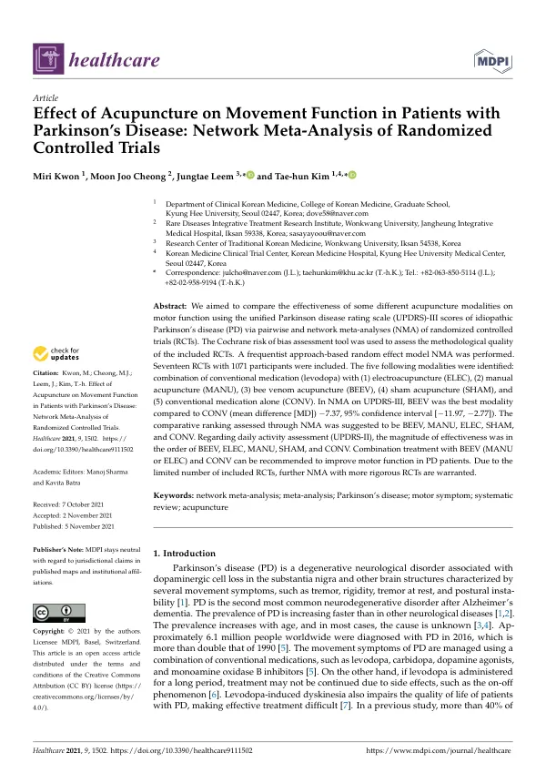

Effect of Acupuncture on Movement Function in Patients with Parkinson’s Disease: Network Meta-Analysis of Randomized Controlled Trials
Kwon M, Cheong MJ, Leem J, Kim Th
Healthcare 9(11):1502

첫 장 · 오픈액세스First page · open access
논문 소개Summary
파킨슨병의 운동 증상에 침을 놓는 방식은 여러 가지입니다. 전침도 있고 수기침도 있고 봉약침도 있습니다. 어느 것이 더 나은지는 서로 직접 비교한 연구가 드물어 알기 어려웠습니다. 이 연구는 무작위 대조시험들을 모아 네트워크 메타분석으로 그 순서를 세워 보려 한 것입니다.
무작위 대조시험 17편, 참여자 1,071명이 들어갔습니다. 비교된 방식은 다섯 가지로, 레보도파에 전침을 더한 것, 수기침을 더한 것, 봉약침을 더한 것, 샴침을 더한 것, 그리고 레보도파 단독입니다. 빈도주의 접근의 랜덤효과 모형을 썼고, 코크란 비뚤림 위험 평가도구로 포함된 시험의 질을 살폈으며, 결과의 견고함을 확인하려고 민감도 분석도 했습니다.
통합 파킨슨병 평가척도 3부, 곧 운동 검사를 기준으로 하면 봉약침을 더한 것이 레보도파 단독보다 나았고 평균차가 -7.37이었습니다. 순위는 봉약침, 수기침, 전침, 샴침, 레보도파 단독 순으로 매겨졌습니다. 일상생활 수행을 보는 2부에서는 봉약침, 전침, 수기침, 샴침, 레보도파 단독 순이었습니다. 두 지표에서 전침과 수기침의 순서가 뒤바뀐다는 점을 그대로 적어 둡니다.
이 순위를 곧이곧대로 읽으면 안 됩니다. 저자들이 먼저 못 박습니다. 포함된 시험의 방법론적 질이 상대적으로 나빴으므로 해석에 주의가 필요하다는 것입니다. 시험의 수와 침 방식의 종류가 적었고, 랜덤효과 모형을 썼음에도 침 처방 사이의 이질성이 남아 있습니다. 기준이 된 대조군, 곧 레보도파 단독군 자체의 이질성도 상당했습니다.
또 하나의 제약은 대조군을 약물치료로만 잡았다는 점입니다. 수술이나 재활 같은 다른 표준치료를 기준으로 삼으면 결과가 달라질 수 있습니다. 치료 기간이나 횟수, 자침 깊이 같은 용량에 대한 하위군 분석도 하지 못했습니다. 저자들은 임상에서 쓰기 좋도록 표준화 평균차 대신 평균차로 결과를 제시했다는 점을 강점으로 들면서, 더 많은 시험이 쌓인 뒤에 중증도와 나이, 성별, 유병기간에 따른 반응자를 찾는 분석으로 나아가야 한다고 적었습니다.
There is more than one way to needle the motor symptoms of Parkinson's disease: electroacupuncture, manual acupuncture, bee venom acupuncture. Which is better was hard to say, since few studies compared them head to head. This work gathered randomised controlled trials and used network meta-analysis to put them in order.
Seventeen randomised controlled trials with 1,071 participants were included. Five modalities were compared: levodopa combined with electroacupuncture, with manual acupuncture, with bee venom acupuncture, with sham acupuncture, and levodopa alone. A frequentist random-effects model was used, the Cochrane risk of bias tool assessed the quality of the included trials, and a sensitivity analysis checked the robustness of the results.
On part III of the Unified Parkinson's Disease Rating Scale — the motor examination — bee venom acupuncture added to levodopa was better than levodopa alone, with a mean difference of −7.37. The ranking ran bee venom, manual, electroacupuncture, sham, and levodopa alone. On part II, activities of daily living, the order was bee venom, electroacupuncture, manual, sham, and levodopa alone. That electroacupuncture and manual acupuncture swap places between the two measures is recorded as it stands.
The ranking should not be read at face value, and the authors say so first. The methodological quality of the included trials was relatively poor, so interpretation requires caution. The number of trials and the range of modalities were small, and despite the random-effects model heterogeneity between acupuncture regimens remains. The reference arm itself — levodopa alone — carried considerable heterogeneity.
A further constraint is that the control was drug treatment only. Taking another standard treatment such as surgery or rehabilitation as the reference might give different results. Subgroup analyses by dose — treatment duration, frequency, needling depth — could not be performed. The authors count as a strength that they reported mean differences rather than standardised ones, for applicability in practice, and write that once more trials accumulate the analysis should move towards identifying responders by severity, age, sex and disease duration.
인용Cite
Kwon M, Cheong MJ, Leem J, Kim Th. Effect of Acupuncture on Movement Function in Patients with Parkinson’s Disease: Network Meta-Analysis of Randomized Controlled Trials. Healthcare. 2021;9(11):1502. doi:10.3390/healthcare9111502